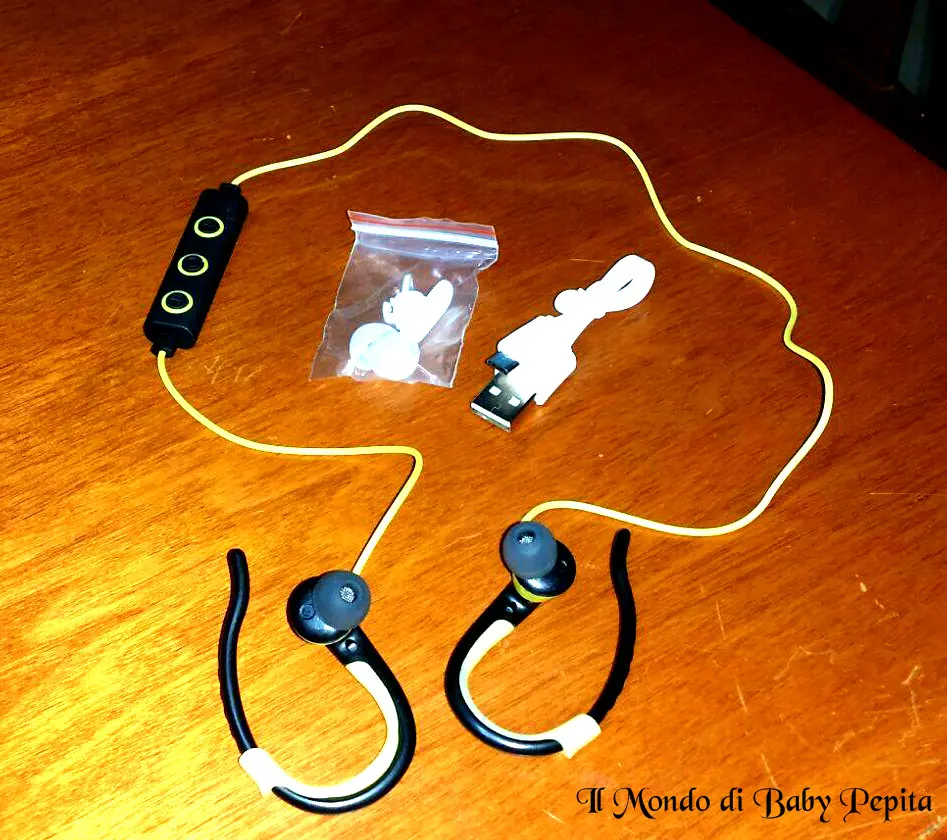
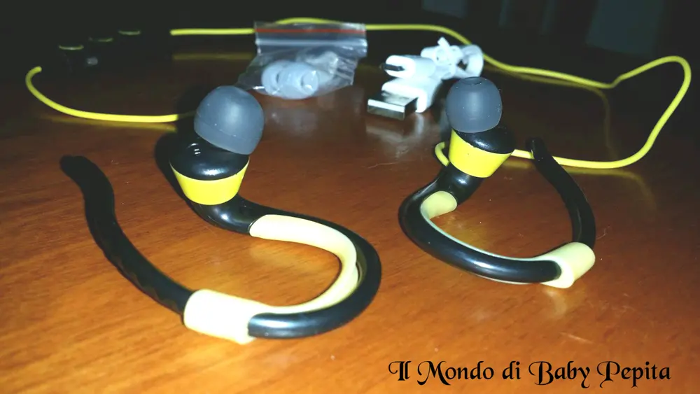
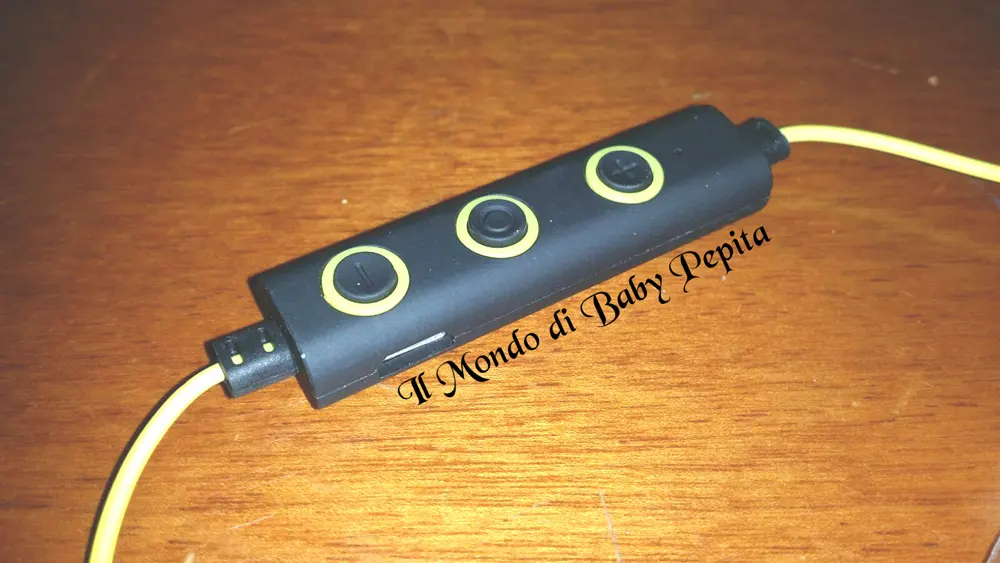

Eximtrade - auricolari bluetooth
 Altro giro altra corsa :DOggi è la volta di un nuovo venditore tanto gentile e devo dire anche veloce ovvero Eximtrade.I telefoni cellulari sono diventati ormai la cosa che più usiamo nelle nostre giornate. . facciamo di tutto dunque per avere quanti più accessori intorno che lo completino. .
Altro giro altra corsa :DOggi è la volta di un nuovo venditore tanto gentile e devo dire anche veloce ovvero Eximtrade.I telefoni cellulari sono diventati ormai la cosa che più usiamo nelle nostre giornate. . facciamo di tutto dunque per avere quanti più accessori intorno che lo completino. . Questi auricolari possono sembrare come tanti auricolari che troviamo in dotazione, spesse volte, nelle confezioni dei telefoni e invece no!Stavolta sono diversi. .Quante volte vi è capitato di litigare con il filo delle cuffiette?
Questi auricolari possono sembrare come tanti auricolari che troviamo in dotazione, spesse volte, nelle confezioni dei telefoni e invece no!Stavolta sono diversi. .Quante volte vi è capitato di litigare con il filo delle cuffiette?

E quante volte, per le persone che sono in moto, motorino, bici o anche le persone sportive che vanno a correre si sono trovati in difficoltà con il filo che vuoi per il casco, vuoi per l'impermeabile, vuoi per la corsa, cadono di continuo o addirittura il microfono è in continuo movimento e quindi, impossibilitati anche ad una telefonata importante che vi eravate prefissati di fare durante le vostre attività?Con questi auricolari senza fili il problema è risolto.Tutto collegato tramite bluetooth e quindi senza jack. .Potrete mettere il telefono in tasca e le cuffiette sulle orecchie senza il fastidio di fili. .Bello no?
Ma vediamo per quali telefoni sono compatibili:I Phone 4I Phone 4sI Phone 5I Phone 5sI Phone 6I Phone 6sI Phone 6 plus I Phone 6s plus Samsung Galaxy s4Samsung Galaxy s5 Samsung Galaxy s6Samsung Galaxy s6 EdgeSamsung Galaxy s6 Edge plusSamsung Galaxy s7 EdgeSamsung Galaxy Note 3Samsung Galaxy Note 4 Samsung Galaxy Note 5HTC OneMotorolaSony XperiaINSOMMA UNA GRAN VARIETÀ DI SMARTPHONE!- In dotazione nella bustina arrivano le cuffie ovviamente
- Gommini di riserva
- Una pinzetta per applicare i gommini
- Cavo per caricare le cuffie
- Foglio illustrativo.
Il colore a me fa morire nero e giallo, diverse dal solito e davvero simpatiche.
Sul telecomando sono presenti 3 tasti che corrispondono:play/pausa/accensione/risposta alla chiamata
volume e cambio traccia

Da notare il led che vi segnalerà lo stato di accensione ed il microfono per effettuare le chiamate.
Per la pratica:Essendo che sono auricolari bluetooh 4.1 basterà tenere premuto il tasto di accensione per inserirlo ed accoppiarlo al nostro telefono e cercarlo tra i dispositivi, una volta accoppiato sarà comunque registrato.
 Funzionalità:Nella descrizione dice che cancella il rumore e l'eco intorno, a mio parere posso dire che lavora come tutti gli auricolari con e senza fili senza quindi aspettarti niente di eccezionale, ma comunque valgono molto per la comodità e la voce degli interlocutori si sentono abbastanza bene.In conclusione posso dire che supera la media considerando anche il rapporto qualità/prezzo che come auricolari bluetooth costano molto meno di tanti altri in commercio, permettendo a chiunque di poter usufruire di una comodità.Prezzo: 12,00 €Per acquistare questi auricolari potete farlo Quihttps://www.amazon.it/Eximtrade-Bluetooth-Auricolare-Telecomando-Smartphones/dp/B01CP2OAVA/ref=cm_cr_arp_d_product_top?ie=UTF8Per quanto riguarda me seguitemi:FACEBOOKINSTAGRAMTWITTER
Funzionalità:Nella descrizione dice che cancella il rumore e l'eco intorno, a mio parere posso dire che lavora come tutti gli auricolari con e senza fili senza quindi aspettarti niente di eccezionale, ma comunque valgono molto per la comodità e la voce degli interlocutori si sentono abbastanza bene.In conclusione posso dire che supera la media considerando anche il rapporto qualità/prezzo che come auricolari bluetooth costano molto meno di tanti altri in commercio, permettendo a chiunque di poter usufruire di una comodità.Prezzo: 12,00 €Per acquistare questi auricolari potete farlo Quihttps://www.amazon.it/Eximtrade-Bluetooth-Auricolare-Telecomando-Smartphones/dp/B01CP2OAVA/ref=cm_cr_arp_d_product_top?ie=UTF8Per quanto riguarda me seguitemi:FACEBOOKINSTAGRAMTWITTER